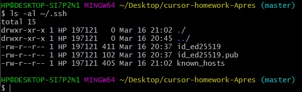

GIT commands:
Basic
- git config --global user.name blabla - указывает глобальное имя пользователя GIT;
- git config --global user.email blabal@bla - указывает глобальный адрес электронной почты пользователя;
- git init - инициирует пустой репозиторий в текущей дериктории;
- git status - показывает статус состояния файлов рабочего каталога и индекса;
- git add - добавляет файлы в коммит. С помощью "." или "*" - добавляем все файлы. Чтобы добавить один файл - указываем его имя и расширение;
- git commit - подтверждает изменения. То-есть указывает, что текущий слепок проекта нужно сохранить;
- git log - команда для просмотра истории коммитов;
- git checkout - служит для перехода между ветками репозитория и выгрузки их содержимого;
- git branch - позволяет редактировать, мониторить, удалять и создавать ветки репозитория;
- git push - команда для установления связи с удалённым репозиторием, вычисления и передачи локальных изменений;
- git pull - забирает изменения из указанного удалённого репозитория, сливая их с текущей веткой;
- git merge - используется для слияния одной или нескольких веток в текущую;
- git clone - это утилита для выбора существующего репозитория и создания его клона.
.gitignore файл - элемент, позволяющий игнорировать или оставлять скрытыми определённые документы, указанные в данном файле.
Advanced
- git revert - создаёт коммит с изменениями, противоположными указанному коммиту - отменяя, внесенные ним правки;
- git reset - команда для отмены внесенных изменений;
- git rebase - автоматизирует перенос цепочек коммитов на новое место;
- git cherry-pick - позволяет переносить отдельные коммиты с одной ветки на другую
- git stash - если коммит не готов, можно отложить правки, с помощью данной команды, в некий *архив*.
Подключение GitHub через SSH
- Сгенерировал ключ SSH;
- Скопировал его командой $ clip < ~/.ssh/id_ed25519.pub;
- Добавил ключ через боковую панель в меню GitHub.
